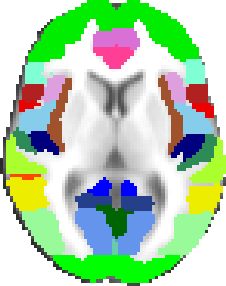
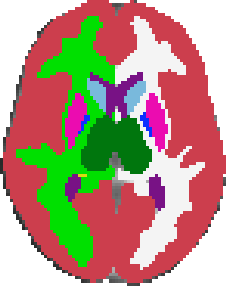
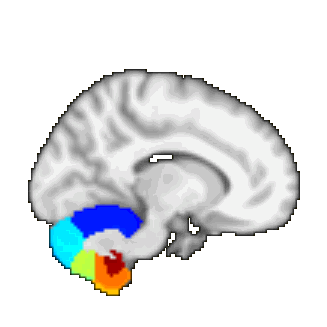

Templates and Atlases included with FSL
For information about a command-line tool for interrogating the atlases, see Atlasquery.
Note: the xml files in the $FSLDIR/data/atlases directory can also be used to find the list of regions and their numbers, but note that the index values in these xml files are equal to the volume number of the corresponding structure in the 4D prob atlases, but are one less than the number of the corresponding label in the maxprob atlases.
MNI152 standard-space T1-weighted average structural template image
Kindly supplied by Andrew Janke, this is derived from 152 structural images, averaged together after high-dimensional nonlinear registration into the common MNI152 co-ordinate system. It corresponds to the "152 nonlinear 6th generation" atlas.
FMRIB58_FA standard-space FA template
Generated by averaging 58 FA images (from diffusion MRI data), in MNI152 space.
Harvard-Oxford cortical and subcortical structural atlases
  Probabilistic atlases covering 48 cortical and 21 subcortical structural areas, derived from structural data and segmentations kindly provided by the Harvard Center for Morphometric Analysis.
T1-weighted images of 21 healthy male and 16 healthy female subjects (ages 18-50) were individually segmented by the CMA using semi-automated tools developed in-house. The T1-weighted images were affine-registered to MNI152 space using FLIRT (FSL), and the transforms then applied to the individual labels. Finally, these were combined across subjects to form population probability maps for each label.
We are very grateful to the following for providing the segmentations used to create these atlases: David Kennedy and Christian Haselgrove, Centre for Morphometric Analysis, Harvard; Bruce Fischl, the Martinos Center for Biomedical Imaging, MGH (NIH grants P41-RR14075, R01 RR16594-01A1, R01 NS052585-01); Janis Breeze and Jean Frazier from the Child and Adolescent Neuropsychiatric Research Program, Cambridge Health Alliance (NIH grants K08 MH01573, K01 MH01798); Larry Seidman and Jill Goldstein from the Department of Psychiatry of Harvard Medical School.
References:
- Makris N, Goldstein JM, Kennedy D, Hodge SM, Caviness VS, Faraone SV, Tsuang MT, Seidman LJ. Decreased volume of left and total anterior insular lobule in schizophrenia. Schizophr Res. 2006 Apr;83(2-3):155-71
- Frazier JA, Chiu S, Breeze JL, Makris N, Lange N, Kennedy DN, Herbert MR, Bent EK, Koneru VK, Dieterich ME, Hodge SM, Rauch SL, Grant PE, Cohen BM, Seidman LJ, Caviness VS, Biederman J. Structural brain magnetic resonance imaging of limbic and thalamic volumes in pediatric bipolar disorder. Am J Psychiatry. 2005 Jul;162(7):1256-65
- Desikan RS, Ségonne F, Fischl B, Quinn BT, Dickerson BC, Blacker D, Buckner RL, Dale AM, Maguire RP, Hyman BT, Albert MS, Killiany RJ. An automated labeling system for subdividing the human cerebral cortex on MRI scans into gyral based regions of interest. Neuroimage. 2006 Jul 1;31(3):968-80.
- Goldstein JM, Seidman LJ, Makris N, Ahern T, O'Brien LM, Caviness VS Jr, Kennedy DN, Faraone SV, Tsuang MT. Hypothalamic abnormalities in schizophrenia: sex effects and genetic vulnerability. Biol Psychiatry. 2007 Apr 15;61(8):935-45
Jülich histological (cyto- and myelo-architectonic) atlas
 A probabilistic atlas created by averaging multi-subject post-mortem cyto- and myelo-architectonic segmentations, performed by the team of Profs Zilles and Amunts at the Research Center Jülich and kindly provided by Simon Eickhoff.
A probabilistic atlas created by averaging multi-subject post-mortem cyto- and myelo-architectonic segmentations, performed by the team of Profs Zilles and Amunts at the Research Center Jülich and kindly provided by Simon Eickhoff.
The atlas contains 52 grey matter structures and 10 white matter structures. This is an update to the data used in Eickhoff's Anatomy Toolbox v1.5. The atlas is based on the miscroscopic and quantitative histological examination of ten human post-mortem brains. The histological volumes of these brains were 3D reconstructed and spatially normalised into the space of the MNI single subject template to create a probabilistic map of each area. For the FSL version of this atlas, these probabilistic maps were then linearly transformed into MNI152 space.
Main references (to reference individual structures' maps, please click here):
- Eickhoff et al., A new SPM toolbox for combining probabilistic cytoarchitectonic maps and functional imaging data. Neuroimage 25(4):1325-35 (2005)
Eickhoff et al., Testing anatomically specified hypotheses in functional imaging using cytoarchitectonic maps. NeuroImage 32(2): 570-582 (2006)
Eickhoff et al., Assignment of functional activations to probabilistic cytoarchitectonic areas revisited. NeuroImage, 36(3): 511-521 (2007)
JHU DTI-based white-matter atlases
 There are two white-matter atlases, both kindly provided by Dr. Susumu Mori, Laboratory of Brain Anatomical MRI, Johns Hopkins University:
There are two white-matter atlases, both kindly provided by Dr. Susumu Mori, Laboratory of Brain Anatomical MRI, Johns Hopkins University:
In the ICBM-DTI-81 white-matter labels atlas, 48 white matter tract labels were created by hand segmentation of a standard-space average of diffusion MRI tensor maps from 81 subjects; mean age 39 (18:59), M:42, F: 39. The diffusion data was kindly provided by the ICBM DTI workgroup.
In the JHU white-matter tractography atlas, 20 structures were identified probabilistically by averaging the results of running deterministic tractography on 28 normal subjects (mean age 29, M:17, F:11).
References:
- Mori et al., MRI Atlas of Human White Matter. Elsevier, Amsterdam, The Netherlands (2005)
Wakana et al., Reproducibility of quantitative tractography methods applied to cerebral white matter. NeuroImage 36:630-644 (2007)
Hua et al., Tract probability maps in stereotaxic spaces: analysis of white matter anatomy and tract-specific quantification. NeuroImage, 39(1):336-347 (2008)
Oxford thalamic connectivity atlas

A probabilistic atlas of 7 sub-thalamic regions, segmented according to their white-matter connectivity to cortical areas, kindly provided by Heidi Johansen-Berg and Timothy Behrens, FMRIB.
This connectivity atlas reports probability of anatomical connection from points in the thalamus to each of 7 cortical zones. These probabilties are calculated using probabilistic diffusion tractography in multiple subjects. For more details see the Thalamic Connectivity Atlas web page.
References:
- Behrens et al., Non-invasive mapping of connections between human thalamus and cortex using diffusion imaging. Nature Neuroscience 6(7):750-757 (2003)
- Behrens et al., Characterisation and propagation of uncertainty in diffusion weighted MR imaging. Magnetic Resonance in Medicine 50:1077-1088 (2003)
Oxford-GSK-Imanova structural and connectivity striatal atlases

Connectivity atlas
A probabilistic atlas of sub-striatal regions, segmented according to their white-matter connectivity to cortical areas. This connectivity atlas reports anatomical connection from points in the striatum to each of 7 cortical zones obtained using probabilistic diffusion tractography in multiple subjects. For more details see the Striatal Connectivity Atlas web page.
References:
Structural atlas
Atlas of sub-striatal regions, segmented according to the anatomical structure. Striatum is divided into caudate, putamen and ventral striatum according to the guidelines described by Tziortzi et al (2011). The sub-regions were manually delineated on the non-linear MNI152 template. For more details see the Structural Striatal Atlas web page.
References:
Tziortzi et al., Imaging dopamine receptors in humans with [11C]-(+)-PHNO: dissection of D3 signal and anatomy. NeuroImage 54: 264-77 (2011)
Acknowledgements
This work was supported by GlaxoSmithKline (GSK) and the Biotechnology and Biological Sciences Research Council (BBSRC BB/G53035X/1). We are grateful to Professor Anne Lingford-Hughes and Dr Ilan Rabiner who provided data for the construction of the atlas.
Talairach atlas

A conversion of the original Talairach structural labellings, kindly provided by Jack Lancaster and Diana Tordesillas Gutiérrez at the Research Imaging Center, UTHSCSA, Texas.
This is a digitised version of the original (coarsely sliced) Talairach atlas (Lancaster 2000) after the application of a correcting affine transform (Lancaster 2007) to register it into MNI152 space.
References:
- Talairach et al. Co-planar stereotaxic atlas of the human brain. Thieme, New York. (1988)
- Lancaster et al. Bias between MNI and Talairach coordinates analyzed using the ICBM-152 brain template. Human Brain Mapping (in press) (2007)
- Lancaster et al. Automated Talairach Atlas labels for functional brain mapping. Human Brain Mapping 10:120-131 (2000)
MNI structural atlas

9 anatomical structural regions, kindly provided by Jack Lancaster at the Research Imaging Center, UTHSCSA, Texas (originally from the McConnell Brain Imaging Centre, MNI).
A single subject's structural image was hand segmented, and the labels were then propagated to more than 50 subjects' structural images using nonlinear registration. Each resulting labelled brain was then transformed into MNI152 space using affine registration, before averaging segmentations across subjects to produce the final probability images. For more details see the Talairach Daemon.
References:
- Collins et al. Automatic 3-D model-based neuroanatomical segmentation. Human Brain Mapping 3(3): 190-208. (1995)
- Mazziotta et al. A probabilistic atlas and reference system for the human brain: International Consortium for Brain Mapping (ICBM). Phil. Trans. Royal Soc. B Biol. Sci. 356(1412):1293-1322 (2001)
Probabilistic cerebellar atlas

A probabilistic cerebellar atlas with 28 anatomical structural regions, kindly provided by Joern Diedrichsen, Institute of Cognitive Neuroscience, UCL and Narender Ramnani, Cognitive Neuroscience Laboratory, Royal Holloway.
The atlas was created by averaging 20 subjects' cerebellar lobule masks, aligned to the MNI152 template by both affine and non-linear registration (a separate atlas for each registration approach). For more details, see the Probabilistic atlas of the human cerebellum webpage
References:
- Diedrichsen, J., Balster, J.H., Cussans, E., Ramnani, N. (2009). A probabilistic MR atlas of the human cerebellum. Neuroimage.
Subthalamic nucleus atlas
A probabilistic subthalamic nucleus atlas, kindly provided by Birte U. Forstmann, Cognitive Science Center Amsterdam, University of Amsterdam.
The atlas was created by manually segmenting 13 subjects' data, aligned to the MNI152 template and corrected for outliers. For more basal ganglia masks and information please see this webpage.
References:
Forstmann, B. U., Keuken, M. C., Jahfari, S., Bazin, P.-L., Neumann, J., Schaefer, A., Anwander, A., & Turner, R. (2012). Cortico-subthalamic white matter tract strength predicts interindividual efficacy in stopping a motor response. Neuroimage 60, 370-375.